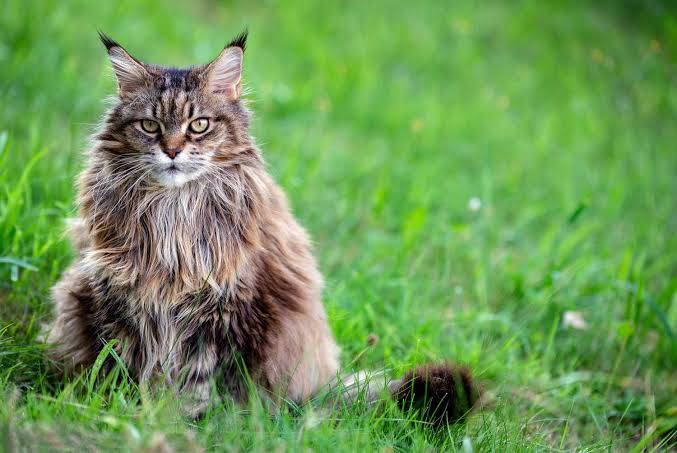

Trabajo 03 - uso de listas
1.1- ¿Para qué sirve la etiqueta ul? Dar un ejemplo en donde lo utilizarías.
La eriqueta "UL", sirve para colocar de manera desordenada los elementos que seleccionemos
automaticamente. Y aparte de esto agrega al principio del elemento un tipo de viña o punto.
1.2- ¿Para qué sirve la etiqueta ol? Dar un ejemplo en donde lo utilizarías.
La etiqueta "ol"sirve para, ordenar los elementos los cuales escribamos, de forma numerica.
- River
- Boca
- Independiente
1.3- ¿Para qué sirve la etiqueta dl? Dar un ejemplo en donde lo utilizarías.
La etiqueta "dl" sirve para, incluir descripciones a los elementos anteriomente escritos.
- River Plate
- River Plate es uno de los clubes más exitosos del mundo y el mas Grande de America.
Cuenta con un total de 72 títulos en su palmaré.
Es el club más ganador de la Primera División de Argentina,
con 38 campeonatos conseguidos.
1.4- ¿Para qué sirve la etiqueta li? Dar un ejemplo en donde lo utilizarías.
La etiquita "li" sirve para, colocar aca adentro los e¡lementos ya seleccionados.
Mundial 2022
Mundial 2010
Mundial 2014
1.5- Crea una lista desordenada con tres elementos (li) que contengan nombres de países de América del Sur.
- Argentina
- Brasil
- Colombia
1.6- Crea una lista ordenada con cinco elementos (li) que contengan los días de la semana en orden alfabético.
- Domingo
- Jueves
- Lunes
- Martes
- Miercoles
.7- Anida una lista desordenada dentro de otro elemento li de otra lista desordenada para crear una lista
anidada de frutas y verduras.
1.8
- pelar y cortar las manzanas en rodajas finas.
- Mezclar la canela, el azucar y la harina en un tazón.
- colocar la masa de la tarta en un molde para horno.
- Colocar las manzanas sobre la masa de la tarta.
- Hornear la Tarta durante 45 minutos.
1.9
El atributo que pasa los elementos a orden desendentes es "reversed"
1.10
- El conjuro
- Siniestro
- El exorcista
- El resplandor
1.11
- TIPOS:
- Siames
- El siames es una raza de gato.
Dentro de dicha raza se distinguen dos variedades por un lado el siamés moderno,
y por otro el siamés tradicional o Thai.

- Persa
- El persa es una raza de gato caracterizada por tener una cara ancha y plana y
un gran abundante pelaje de variados colores.
- Siberiano
- El Gato Siberiano es un gato nativo de la zona oriental de Rusia,
específicamente de la fría región de siberia
y probablemente sea el resultado del cruce entre el gato europeo
y el gato salvaje de los bosques siberianos.

- Esfinge
- El sphynx o gato Esfinge es una raza de gato originaria de Canadá
La característica más llamativa de esta raza es la aparente ausencia de pelaje y
su aspecto delgado.
- Korat
- El korat es una raza de gato doméstico originaria de Tailandia.
A pesar de ser una raza antigua, el korat no se le reconoció fuera de Asia y
de Tailandia hasta hace poco tiempo.
: